제강기능장 (2003-07-20 기출문제)
1과목: 임의 구분
1. 제강반응에서 용강중에 함유되어 용강의 밀도를 증가하는 원소는?
- Si
- C
- Mn
- Ni
(정답률: 54%)

2. 용융 강재의 주 기능에 해당되는 것은?
- 산소를 운반하는 매개체로 산화철을 보유한다.
- 용강의 과열 촉진과 냉각제의 기능을 나타낸다.
- P, S 등의 성분을 공급한다.
- 용강과 부분적으로 혼합하여 불순원소를 공급한다.
(정답률: 79%)
3. 강재-용강간의 반응에서 "
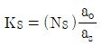
"중 (Ks)는?- 분배상수
- Sulfur capacity
- 산화철농도
- 강재내의 황의 몰(mol)분율
(정답률: 79%)
4. 산성강재에서 가장 유동성을 저해시키는 성분은?
- CaO
- FeO
- MnO
- SiO2
(정답률: 67%)
5. 전로 조업 중 강재(slag)에 의해서 가장 먼저 산화제거 되는 용선중의 원소는?
- C
- Si
- Mn
- Mg
(정답률: 80%)
6. 석출탈산을 효과적으로 행하기 위한 탈산제의 구비조건이 아닌 것은?
- 산소에 대한 친화력이 크며 산소와 반응속도가 클 것
- 탈산 원소의 용강중으로 용해 속도가 빠를 것
- 탈산생성물의 부상속도가 크고 탈산원소가 잔류하여도 강질(鋼質)을 해치지 않을 것
- 용강에 대한 용해도가 크고 용강중에서 급속히 용해 할 것
(정답률: 70%)
7. 전로내에 사용되는 석회석의 역할이 아닌 것은?
- 냉각제
- 용강에 탄소부여
- 조재제
- 슬로핑(slopping)방지
(정답률: 78%)
8. 산소전로에서 산소유량[Q Nm3/h]은 다음식과 같은 관계가 있다. 이 관계식에서 P는 취련압력[P kg/cm2]이다. S가 뜻하는 것은? (단, Q = θT × S × P (θT ≒ 1.06)
- 취련 소요시간
- 산소공급 속도
- 노즐의 단면적
- 노즐의 공의 수
(정답률: 80%)
9. 저취산소전로법(Q-BOP법)의 특징이 아닌 것은?
- 고철배합률을 상취전로보다 높일 수 있다.
- 철분 회수율이 상취전로에 비해 높다.
- 강재의 동일 FeO 수준에 대하여 상취전로보다 탈인과 탈황이 떨어진다.
- 냉각가스로서 수소를 포함한 가스를 사용하는 경우 강중 수소함유량이 증가한다.
(정답률: 81%)
10. 강괴에서 탈산생성물(脫酸生成物)로 인한 내생적(內生的)개재물에 대한 설명 중 옳은 것은?
- Al, Ti, Zr, W 등 탈산생성물의 개재물은 층상으로 분포 된다.
- Rimmed 강괴에서는 SiO2, Mn-silicate개재물이 주체이다.
- Si-Mn 탈산에서는 FeO, MgO, P2O5가 개재물의 주체이다.
- 생성 산화물의 융점이 낮은 경우는 개재물이 구상(球狀)이다.
(정답률: 56%)
11. 전기로용 변압기에 대용량의 Reactance 를 갖추게 하는 가장 큰 이유는?
- 용해를 신속히 하기 위하여
- 전압변동에 대처하기 위하여
- 큰 전류가 흘러도 외부송전선에 충격전류가 흐르지 않도록 하기 위하여
- 2차 전압을 높게 하기 위하여
(정답률: 87%)
12. 전기로 제강에서 탈수소를 하기 위한 가장 좋은 조건은?
- 대기 중 습도가 낮을 것
- 탈산속도가 작을 것
- 강욕온도가 낮을 것
- 슬랙층이 아주 두꺼울 것
(정답률: 85%)
13. 스테인리스강의 2차정련법인 AOD법에 관한 설명 중 틀린 것은?
- CO 분압을 낮추므로서 탄소를 우선적으로 저하시키는 방법이다.
- 풍구내관으로 Ar 및 산소의 혼합가스를 취입한다.
- 내화물로는 규석벽돌이 주로 쓰인다.
- 모양과 설비가 전로와 비슷하다.
(정답률: 76%)
14. 탄소강에서의 Martensite 변태에 관한 설명 중 옳지 않은 것은?
- Martensite 변태는 무확산 변태이다.
- Martensite 변태 후 모상에서의 조성변화는 일어나지 않는다.
- Martensite 변태에서 만들어진 조직은 [C]농도가 증가함에 따라 BCC에서 BCT로 된다.
- Martensite 변태는 확산에 의해 임의의 일정온도에 급작스럽게 시작되고 완료된다.
(정답률: 64%)
15. 제강설비에서 비연소식 폐가스 냉각설비는?
- WJ
- DL
- OC
- OG
(정답률: 85%)
16. 용강의 탈산속도는 개재물의 부상속도와도 관계되며 부상속도는 다음과 같이 나타난다. η 는 무엇을 나타내는가? (단, g:중력가속도, ρFe:용강의 밀도, ρs:개재물의 밀도, r:개재물의 반지름)
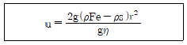
- 용강의 온도
- 용강의 점성계수
- 개재물의 함유량
- 탈산제의 첨가량
(정답률: 79%)
17. 10 ton의 전기로에서 지름 400 mm의 전극을 사용하여 12000 A의 전류를 통할 때 전극의 전류밀도는 약 얼마인가?
- 8.63 A/cm2
- 9.55 A/cm2
- 12.52 A/cm2
- 15.78 A/cm2
(정답률: 60%)
18. Arc전기로의 보통전력(RP)조업에 비하여 초고전력(UHP) 조업이 갖는 특징 중 틀린 것은?
- 고역율이므로 전력 원단위는 높다.
- 생산성이 향상된다.
- 굵고 짧은 Arc로 조업한다.
- 용락 후의 열전달 효율이 높다.
(정답률: 71%)
19. 연속주조조업 중 설비요건이 아닌 조업요인이 되는 것은?
- 주조속도
- 주형형상
- 주형진동기구
- 인발기구
(정답률: 79%)
20. 킬드강에 대한 설명 중 틀린 것은?
- Fe-Si, Al 등으로 충분히 탈산한다.
- 주형내에서 조용히 응고한다.
- 강괴 실수율이 아주 높다.
- 고급강에 사용할 수 있다.
(정답률: 60%)
2과목: 임의 구분
21. 연주 슬래브(slab)에서 나타나는 내부 결함에 해당하는 것은?
- 면 세로 Crack
- 면 가로 Crack
- 탕주름 Crack
- 단면 Crack
(정답률: 73%)
22. 연속주조에서 Mould powder의 기능 설명이 틀린 것은?
- 용강면을 덮어서 공기산화를 방지한다.
- 용융한 Powder가 주형벽으로 흘러서 윤활제로 작용한다.
- 용강의 냉각을 촉진시켜 주조속도를 빨리할 수 있게 한다.
- 용강내의 개재물을 흡수하여 강의 청정도를 높인다.
(정답률: 82%)
23. 탄소강의 결정입도 번호가 7일 경우 배율 100배의 현미경사진 1 in2내의 들어 있는 결정입자 수는?
- 8 grains
- 16 grains
- 64 grains
- 82 grains
(정답률: 78%)
24. 재해발생의 빈도를 찾아보기 위한 도수율의 식이 옳은 것은?
- 도수율=재해발생건수/연총노동시간수 × 1,000,000
- 도수율=재해손실일수/연총노동시간수 × 1,000,000
- 도수율=재해 인원수/연총노동시간수 × 1,000,000
- 도수율=재해 손실비/연총노동시간수 × 1,000,000
(정답률: 84%)
25. 전로설비의 주요한 설비에 해당되지 않는 것은?
- 정련 반응로인 노체
- 경동장치
- 본체의 소각설비
- 산소취입장치
(정답률: 83%)
26. 전로의 폐가스 냉각설비에 속하지 않는 것은?
- 연소 공냉법
- 보일러법
- 비연소식 OG회수법
- 전기 집진법
(정답률: 82%)
27. LD전로의 염기성 내화물로 사용하지 않는 것은?
- 마그네시아 연와
- 돌로마이트 연와
- 돌로마이트 스탬프재
- 샤모트 연와
(정답률: 83%)
28. LD전로에 사용하는 랜스 노즐(Lance Nozzle)의 재질은?
- 규소강
- 알루미늄
- 순구리
- 탄소강
(정답률: 91%)
29. 킬드강의 하주 주입시에 주입 중 탕면의 산화방지, 탕주름의 발생방지를 위하여 어떤 조치가 가장 적한한가?
- 발열 파우다를 투입한다.
- 탕상 조정제를 투입한다.
- 환원성 불꽃으로 탕면가열한다.
- 주형 상부를 철판으로 덮는다.
(정답률: 74%)
30. 림드강의 교반운동(rimming action)은 무슨 가스의 영향인가?
- O
- CO
- H2
- H2O
(정답률: 83%)
31. 연속주조기에서 용강을 레이들(ladle)로부터 받아서 주형에 배분함과 동시에 주입량을 조절하는 것은?
- 가이드로울(guide roll)
- 턴디시(tundish)
- 핀치로울(pinch roll)
- 레이들(ladle)
(정답률: 93%)
32. 진공설비 없이 그림처럼 레이들의 용강위의 슬랙중에서 아아크를 발생시키는 서브머지드 (Submerged)Arc정련을 무엇이라 하는가?
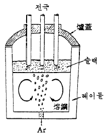
- VAD법
- ASEA-SKF법
- LF법
- VOD법
(정답률: 79%)
33. 전기로 제강법에서 사용되어지는 철광석의 환원도를 나타내는 환원율의 식이 맞는 것은?
- 환원으로 제거된 광석량/철광석중의 전 산소량 × 100
- 환원으로 제거된 산소량/철광석중의 전 산소량 × 100
- 환원철중의 전철분/환원철중의 금속분 × 100
- 환원철중의 금속철/환원철중의 전철분 × 100
(정답률: 68%)
34. 전기로조업의 진보된 신기술이라고 볼 수 없는 것은?
- 초 고전력 조업
- 불순물의 제련
- 환원철 이용
- 자동제어
(정답률: 66%)
35. 금속의 결정구조에서 조밀육방격자의 단위격자 소속원자수와 배위수가 맞는 것은?
- 1, 5
- 2, 12
- 3, 9
- 4, 16
(정답률: 72%)
36. 생산현장 작업자들의 안전지식의 기술 및 태도를 바람직한 수준으로 원활하게 추진 하기 위하여 적용되는 방법과 관련이 가장 먼 것은?
- 안전작업의 확인 감독 및 관리
- 교육 및 훈련
- 동기부여
- 정밀 경진대회의 계획
(정답률: 87%)
37. 혼선로에서 화학성분 감소 효과가 가장 큰 것은?
- Mn
- S
- P
- Cr
(정답률: 62%)
38. 연속주조에서 두께 6∼12mm 의 강관을 강편 크기로 프레스 가공한 것의 지지틀에 넣은 것으로 고속주조에 적합하며 소형 빌릿 연주기에 사용되는 주형의 형식은?
- Dish mold
- Impeller mold
- Parting mold
- Tubular mold
(정답률: 80%)
39. 프로그램 작성에 필요한 프로그램 언어 중 프로그램 메모리에 저장되는 프로그램 언어의 종류가 아닌 것은?
- FORTRAN
- BYTE
- COBOL
- BASIC
(정답률: 83%)
40. Auto CAD로 도면작업시 도형을 복사할 수 있는 명령어는?
- COPY
- ZOOM
- STRETCH
- EDIT
(정답률: 87%)
3과목: 임의 구분
41. 유압 Symbol 중 흐르는 방향이 일방향으로써 역방향으로 흐를 수 없는 것을 표시한 것은?
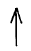
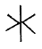
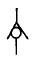
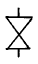
(정답률: 83%)
42. LD 전로법의 일반적인 특징에 대한 설명이 틀린 것은?
- 장입 주원료는 용선과 고철이다.
- 제강시간은 약 30분 정도이다.
- 강재의 재질이 균일하고 스테인리스강이 제조된다.
- 산소를 불어 넣어 정련한다.
(정답률: 78%)
43. LD 전로에서 요구되는 생석회 성질과 거리가 먼 것은?
- 소성이 잘 되어 반응성이 좋을 것
- 정립되어 반응성이 좋을 것
- 반응촉진을 하기 위하여 가루가 많을 것
- 인, 황, SiO2 등의 불순물이 적을 것
(정답률: 89%)
44. 금속재료의 일반적 특성과 관계가 먼 것은?
- 연성과 전성이 나빠 변형이 어렵다.
- 열과 전기의 전도가 잘 된다.
- 금속적 광택을 가지고 있다.
- 수은을 제외하고 고체 상태에서 결정구조를 갖는다.
(정답률: 84%)
45. 생산 현장에서 자동제어를 하므로서 얻을 수 있는 잇점이 아닌 것은?
- 인력자원의 다량화
- 노동조건의 향상
- 생산속도의 향상
- 균일한 제품의 생산
(정답률: 88%)
46. 연속주조에서 주형의 진동에 의하여 주편 표면에 횡방향으로 줄무늬가 남게되는 것은?
- Ingot sight
- Oscillation mark
- Powder castings
- Bublling point
(정답률: 91%)
47. 한 고상(固相)에 융체(融體)가 작용하여 다른 고상(固相)을 생성하는 반응은?
- 공정반응
- 포정반응
- 석출반응
- 용해반응
(정답률: 69%)
48. 강에서 기계 절삭성을 향상시키기 위하여 첨가하는 원소가 아닌 것은?
- S
- W
- Se
- Pb
(정답률: 75%)
49. 주철에서 응고시 가장 강력한 흑연화 촉진 원소는?
- V
- S
- Sn
- Si
(정답률: 54%)
50. 수강한 레이들을 진공실 내에 놓고 Ar 가스를 레이들 저부에서 취련하여 정련하는 방법은?
- ESR법
- RH-OB법
- VOD법
- CLU법
(정답률: 78%)
51. 코일스프링용 소재로 가장 적합한 것은?
- SCM 415
- SM55C
- STC 7
- SPS 8
(정답률: 75%)
52. 연속주조 주편 응고시 기포가 발생한다. 이러한 기포를 발생시키는 용강 중 용해 원소가 아닌 것은?
- O
- H
- N
- C
(정답률: 54%)
53. 소음의 크기를 나타낸 것 중 옳은 것은?
- 폰(phone), 파운드(lb), 숀(sone)
- 폰(phone), 데시벨(db), 룩스(lux)
- 폰(phone), 데시벨(db), 숀(sone)
- 폰(phone), 데시벨(db), 피에스아이(psi)
(정답률: 78%)
54. 방진마스크의 구비조건이 아닌 것은?
- 시야가 좁을 것
- 중량이 가벼울 것
- 여과효율이 좋을 것
- 흡기저항이 낮을 것
(정답률: 84%)
55. 어떤 측정법으로 동일 시료를 무한 횟수 측정하였을 때 데이터의 분포의 평균치와 참값과의 차를 무엇이라 하는가?
- 신뢰성
- 정확성
- 정밀도
- 오차
(정답률: 75%)
56. 예방보전의 기능에 해당하지 않는 것은?
- 취급되어야 할 대상설비의 결정
- 정비작업에서 점검시기의 결정
- 대상설비 점검개소의 결정
- 대상설비의 외주이용도 결정
(정답률: 90%)
57. 관리한계선을 구하는데 이항분포를 이용하여 관리선을 구하는 관리도는?
- Pn 관리도
- U 관리도
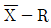
관리도- X 관리도
(정답률: 59%)
58. 로트(Lot)수를 가장 올바르게 정의한 것은?
- 1회 생산수량을 의미한다.
- 일정한 제조회수를 표시하는 개념이다.
- 생산목표량을 기계대수로 나눈 것이다.
- 생산목표량을 공정수로 나눈 것이다.
(정답률: 67%)
59. 다음의 데이터를 보고 편차 제곱합(S)을 구하면? (단, 소숫점 3자리까지 구하시오.)
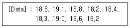
- 0.338
- 1.029
- 0.114
- 1.014
(정답률: 74%)
60. 공정 도시기호중 공정계열의 일부를 생략할 경우에 사용되는 보조 도시기호는?
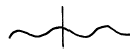
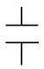
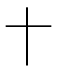
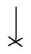
(정답률: 79%)